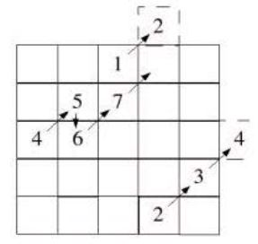

奇數魔方陣
December 12, 2021- 奇數魔方陣是將 1 到奇數 n 的數字排列在 n x n 的方陣，各行、各列與各對角線的和必須相同：
- 17 24 1 8 15
- 23 5 7 14 16
- 4 6 13 20 22
- 10 12 19 21 3
- 11 18 25 2 9
解法思路
奇數魔方陣最簡單，第一個數字放在第一行第一列的中央，然後向右（左）上填，如果右（左）上已有數字就向下填，如所示：

為了計算方便，利用索引 1 到 n 的部份，在計算是向右（左）上或向下時，可以將索引值除以 n 值，如果得到餘數為 1 就向下，否則就往右（左）上，原理很簡單，看看是不是已經在同一列上繞一圈就對了。
程式實作
#include <stdio.h>
#include <stdlib.h>
#define N 5
int main(void) {
int matrix[N][N] = {0};
int i = 0;
int j = (N+1) / 2;
int key;
for(key = 1; key <= N*N; key++) {
if((key % N) == 1)
i++;
else {
i--;
j++;
}
if(i == 0)
i = N;
if(j > N)
j = 1;
matrix[i - 1][j - 1] = key;
}
int m, n;
for(m = 0; m < N; m++) {
for(n = 0; n < N; n++)
printf("%2d ", matrix[m][n]);
}
return 0;
}
public class Matrix {
public static int[][] magic(int n) {
int[][] matrix = new int[n][n];
for(int i = 0, j = (n + 1) / 2, key = 1; key <= n*n; key++) {
if((key % n) == 1) i++;
else { i--; j++; }
if(i == 0) i = n;
if(j > n) j = 1;
matrix[i - 1][j - 1] = key;
}
return matrix;
}
public static void main(String[] args) {
for(int[] row : Matrix.magic(5)) {
for(int number: row) {
System.out.printf("%2d ", number);
}
System.out.println();
}
}
}
def magic(n):
square = []
for i in range(n):
square.append([0] * n)
i = 0
j = (n + 1) // 2
for key in range(1, n ** 2 + 1):
if key % n == 1:
i += 1
else:
i -= 1
j += 1
if i == 0:
i = n
if j > n:
j = 1
square[i - 1][j - 1] = key
return square
matrix = magic(5)
print(matrix)
object Matrix {
def magic(n: Int) = {
val matrix = new Array[Array[Int]](n, n)
var i = 0
var j = (n + 1) / 2
for(key <- 1 to n * n) {
if((key % n) == 1) i += 1
else { i -= 1; j += 1}
if(i == 0) i = n
if(j > n) j = 1
matrix(i - 1)(j - 1) = key
}
matrix
}
}
Matrix.magic(5).foreach(row => {
row.foreach(number => printf("%2d ", number))
println()
})
def magic(n)
matrix = Array.new(n) {
Array.new(n, 0)
}
i = 0
j = (n + 1) / 2
1.upto(n ** 2) { |key|
if key % n == 1
i += 1
else
i -= 1
j += 1
end
if i == 0
i = n
end
if j > n
j = 1
end
matrix[i - 1][j - 1] = key
}
matrix
end
matrix = magic(5)
p matrix
function magic(n) {
let matrix = [];
for(let i = 0; i < n; i++) {
matrix.push([]);
}
let i = 0;
let j = Math.floor((n + 1) / 2);
for(let key = 1; key < n * n + 1; key ++) {
if(key % n == 1) {
i++;
}
else {
i--;
j++;
}
if(i == 0) {
i = n;
}
if (j > n) {
j = 1;
}
matrix[i - 1][j - 1] = key;
}
return matrix
}
matrix = magic(5)
console.log(matrix)
slice :: Int -> Int -> [a] -> [a]
slice start stop xs = take (stop - start) (drop start xs)
updated i j v mx =
let
row = mx !! i
updatedRow = (slice 0 j row) ++ [v] ++ (slice (j + 1) (length row) row)
before = slice 0 i mx
after = slice (i + 1) (length mx) mx
in before ++ [updatedRow] ++ after
magic n =
let
matrix = replicate n $ replicate n 0
in _magic 0 ((n + 1) `div` 2) 1 n matrix
where
_magic i j key n matrix=
if key == n * n + 1 then matrix
else
let
(ni, nj) = nij i j key n
nMatrix = updated (ni - 1) (nj - 1) key matrix
in _magic ni nj (key + 1) n nMatrix
nij i j key n =
if key `mod` n == 1 then (i + 1, j)
else
let
ni = i - 1
nj = j + 1
in (if ni == 0 then n else ni, if nj > n then 1 else nj)
main = print $ magic 5